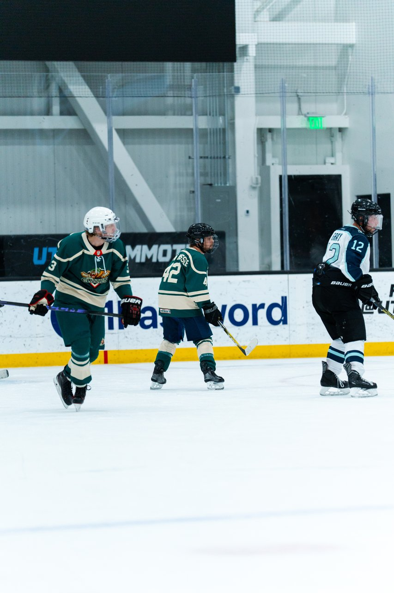

You want to play beer league hockey in Utah. You don't have a team. That's not a dead end — it's the default starting position for most adult players, and Utah's rinks are set up to handle exactly this problem. Here's every real way people actually land on a roster, in order of how well they work.
This sounds too simple to be the best advice, but it is. Front desk staff and league coordinators at Utah rinks — the Utah Mammoth Ice Center in Sandy, SLC Sports Complex, Salt Lake County Ice Center in Murray, Cottonwood Heights Ice Arena, and Acord Ice Center in West Valley City — run the adult leagues and know, in real time, which teams are short players. They can point you to registration windows, free-agent lists, and skill-level divisions faster than any internet search.
Almost every adult league has a "free agent" option, and it's the single most common way new players get on a team. You register as an individual, list your experience level honestly, and the league office places you on a roster that needs bodies. No friends required, no tryout, no awkward cold-DMing a captain. This is how the majority of first-time beer league players in Utah get their start.
Groups like "Utah Beer League Hockey," "SLC Adult Hockey," and rink-specific league pages are where captains post open roster spots in real time, and where players post themselves as available subs or full-timers. It's unglamorous, but it's active and it's fast — a post asking "any teams need a D-level player for the fall season?" routinely gets answers within a day.

Pickup hockey and drop-in sessions exist at most of the rinks listed above, and they're a two-for-one: you get ice time while you search, and you get seen by captains and league regulars who are always scouting for subs. Showing up consistently to drop-in is one of the fastest ways to get recruited directly, because captains would rather grab someone whose game they've already watched than a total unknown from a Facebook post.
If you already know a team's name — or found one through this list — message them directly. Most teams, including us, need subs constantly and full roster spots every season. If our green-and-gold nonsense speaks to you, follow @UtahGlizziesHockey or swing by The Pit and say hello.
Once you're on a roster, the next question is gear — we cover exactly what to buy and what to skip in our beer league equipment checklist for beginners. And if you haven't picked a rink yet, our full directory of Utah ice rinks breaks down every sheet in the state.
The Utah Glizzies are a beer league team based in Sandy that takes hockey exactly as seriously as it deserves. If you want a team, not just a roster spot, come find us.
Meet the Team Go to The PitUtah's adult hockey scene has grown fast enough that "no team" is a temporary problem, not a permanent one. Call a rink, register as a free agent, join a Facebook group, and show up to drop-in — do two or three of these in the same week and you'll be on a roster before the month's out.